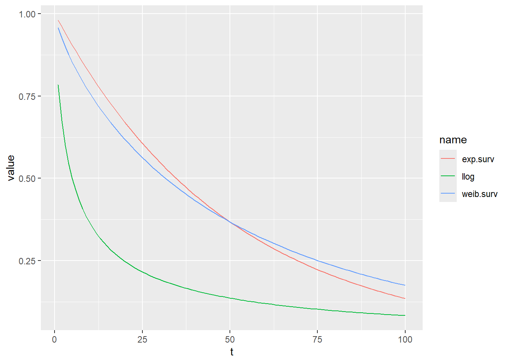
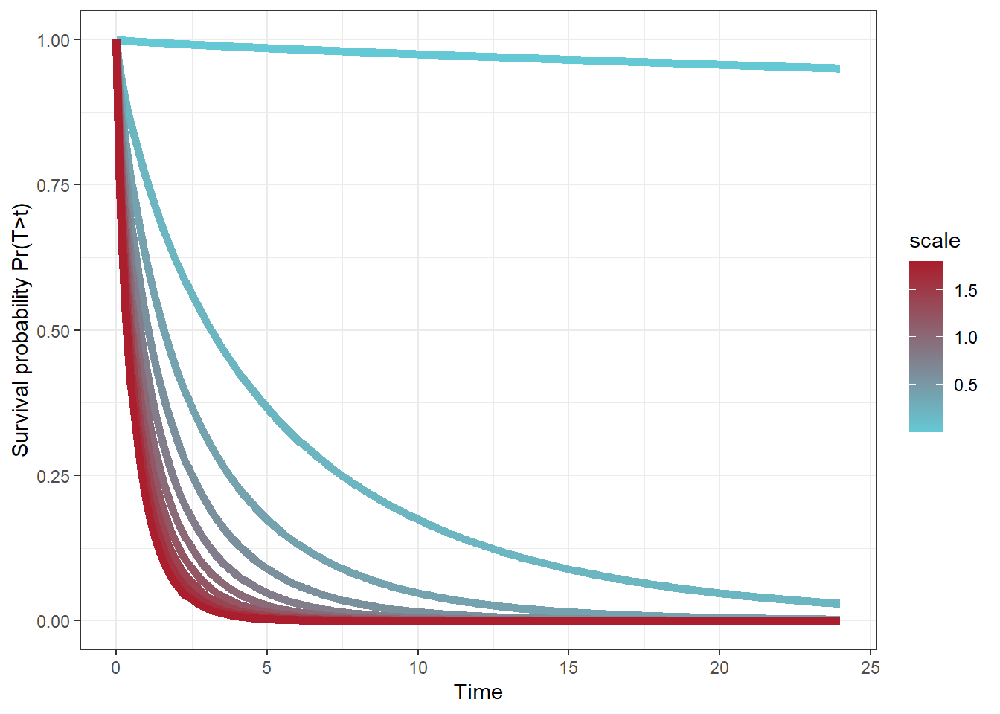
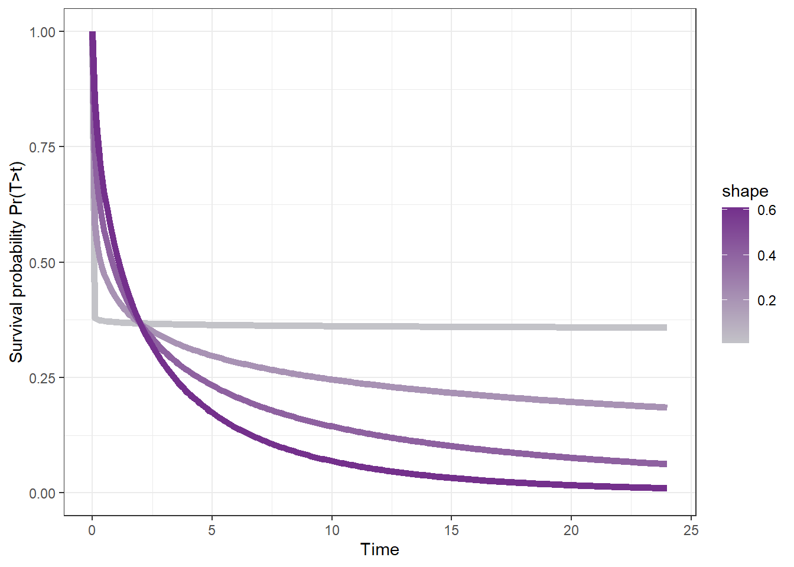

library(tidyr)
library(ggplot2)
library(dplyr)
library(survival)
library(survminer)
library(hrbrthemes)
#colour range
oh_cols<- c('#65C9D5', '#EDE668', '#AA1E2D', '#F26828', '#FDCEB0', '#C3C3C8', '#74308C','#18272F')
cc<-colorRampPalette(c('#65C9D5', '#AA1E2D'))
my_colors <- cc(500)
cc1<-colorRampPalette(c('#C3C3C8','#74308C'))
my_colors1 <- cc1(10) 4 Accelerated Failure time models
5 Load libraries
6 Accelerated failture time (AFT) model
Notes based on https://univ-pau.hal.science/hal-02953269/document
\[log(T) = \beta_{0} + \beta'X+\sigma\epsilon\]
- \(T\) is the given survival time
- \(\beta_{0}\) is the intercept
- \(\beta'\) is the set of slope parameters
- \(X\) is the vector of covariates
- \(\epsilon\) is the error term
- \(\sigma\) is the additional parameter that scales the error
The AFT model assumes that covariates have a multiplicative effect on the survival time and an additive effect on \(log(T)\). And we can isolate \(T\) as:
\[T = exp(\beta_{0}) \times exp(\beta'X) \times exp(\sigma\epsilon)\]
6.1 The Exponential distribution
The exponential distribution has the survival function, \(S_{T}(t) = e^{-\lambda t}\) for all \(t \ge 0, \lambda > 0\) and the hazard function is constant, \(h_{T}(t)=\lambda\). If the lifetime of \(T\) is exponential, then \(\epsilon\) follows a Gumbel distribution witht he survival function \(S_{\epsilon}(y)= exp(-e^{y})\) and obtain:
\[S_{T|X}(t|x)= exp(-\lambda t); \frac{1}{\lambda}=exp(\beta_{0}+\beta'x)\]
6.2 The Weibull distribution
The survival function:
\[S_{T}(t)=e^{(-\lambda t)^\alpha}\]
where…
- \(\alpha\) is the shape parameter
- \(\lambda\) is the scale parameter
In an AFT regression, \(\frac{1}{\lambda} = exp(\beta_{0} + \beta'x)\) and \(\alpha = \frac{1}{\sigma}\). The exponential model is a special case of the weibull model with a shape parameter equal to 1.
expo<-tibble(t=1:100,exp.surv=exp(-.02*t),llog=1/(1+(.2*t)^.8),weib.surv=exp(-(.02*t)^.8))
expo1<-expo|>
pivot_longer(cols=exp.surv:weib.surv)
ggplot(expo1,aes(x=t,y=value,color=name))+geom_line()
#let's simulate different weibull
#simulate different scale parameters
dat<-expand.grid(scale=seq(0.001,2,.2),time=seq(0,24,.1))|>
group_by(scale)|>
mutate(weib=exp(-(scale*time)^.8))
ggplot(dat,aes(x=time,y=weib,colour=scale,group=scale,fill=scale))+geom_line(linewidth=2)+scale_y_continuous(limits=c(0,1))+xlab("Time")+ylab("Survival probability Pr(T>t)")+theme_bw()+scale_colour_gradientn(colors = my_colors)
#Higher scale values = quicker drop in survival probability.
#now simulate different shape parameters
dat2<-expand.grid(shape=seq(0.01,.8,.2),time=seq(0,24,.1))|>
group_by(shape)|>
mutate(weib=exp(-(.5*time)^shape))
ggplot(dat2,aes(x=time,y=weib,colour=shape,group=shape,fill=shape))+geom_line(linewidth=2)+scale_y_continuous(limits=c(0,1))+xlab("Time")+ylab("Survival probability Pr(T>t)")+theme_bw()+scale_colour_gradientn(colors = my_colors1)
#higher shape values lead to steeper drop 7 Simulating cox coefficients
#simulating beta
#exp(.16)
loghaz1<-.16 #continuous regression coefficient
x<-1:10 #continuous variable
d<-tibble(haz=exp(loghaz1*x)# coefficient associated with hazard rate
,age=x)|>
mutate(loghaz=log(haz),
loghazcoeff=loghaz1#coefficient of hazard rate with one unit increase of continuous variable
)
d
ggplot(d,aes(x=age,y=loghaz))+geom_line()+geom_point()
ggplot(d,aes(x=age,y=haz))+geom_line()+geom_point()
#simulate curves
d2<-d|>
group_by(haz)|>
do(hazfun=exp(.$haz*x))
d2|>8 analyzing high risk patient data for length of stay
d<-read.csv("07_30daysurvival_dataset-parsed-foranalysis.csv")
#fit aft model
d$losstatus<-1
aft1<-survreg(Surv(los,losstatus)~1,data=d,dist="weibull")
summary(aft1)
#exp(-.1882)
#ws<-exp(summary(aft1)$coef)
ws<-1/exp(summary(aft1)$coef)
wsc<-1/aft1$scale
#plot out model
modfit<-tibble(surv=dweibull(x=seq(1,30,1),shape=1/exp(summary(aft1)$coef),scale=wsc),time=seq(1,30,1))
ggplot(modfit,aes(x=time,y=surv))+geom_line()+scale_x_continuous(labels=seq(0,30,2),breaks=seq(0,30,2))+ylab("")
#make predictions from model and compare to raw data
#predict(aft1,type="quantile",p=c(0.25,.5,.75))
#prediction equation
#exp(-(.02*t)^.8)
time<-seq(0,30,.01)
pred<-tibble(time,surv=exp(-(ws*time)^wsc))
#compare with km plots
km<-survfit(Surv(los,losstatus)~1,data=d)
kmd<-tibble(time=summary(km)$time,surv=summary(km)$surv)
ggplot(pred,aes(x=time,y=surv))+geom_line()+geom_line(data=kmd,aes(x=time,y=surv),color="blue")+scale_x_continuous(limit=c(0,30),labels=seq(0,30,2),breaks=seq(0,30,2))+ylab("")9 Session info
sessionInfo()R version 4.5.0 (2025-04-11 ucrt)
Platform: x86_64-w64-mingw32/x64
Running under: Windows 11 x64 (build 26100)
Matrix products: default
LAPACK version 3.12.1
locale:
[1] LC_COLLATE=English_United States.utf8
[2] LC_CTYPE=English_United States.utf8
[3] LC_MONETARY=English_United States.utf8
[4] LC_NUMERIC=C
[5] LC_TIME=English_United States.utf8
time zone: America/New_York
tzcode source: internal
attached base packages:
[1] stats graphics grDevices utils datasets methods base
other attached packages:
[1] hrbrthemes_0.8.7 survminer_0.5.0 ggpubr_0.6.0 survival_3.8-3
[5] dplyr_1.1.4 ggplot2_3.5.2 tidyr_1.3.1
loaded via a namespace (and not attached):
[1] generics_0.1.3 fontLiberation_0.1.0 rstatix_0.7.2
[4] lattice_0.22-6 extrafontdb_1.0 digest_0.6.37
[7] magrittr_2.0.3 evaluate_1.0.3 grid_4.5.0
[10] fastmap_1.2.0 jsonlite_2.0.0 Matrix_1.7-3
[13] backports_1.5.0 Formula_1.2-5 gridExtra_2.3
[16] purrr_1.0.4 scales_1.3.0 fontBitstreamVera_0.1.1
[19] abind_1.4-8 cli_3.6.4 fontquiver_0.2.1
[22] KMsurv_0.1-5 rlang_1.1.6 munsell_0.5.1
[25] splines_4.5.0 withr_3.0.2 yaml_2.3.10
[28] gdtools_0.4.2 tools_4.5.0 ggsignif_0.6.4
[31] colorspace_2.1-1 km.ci_0.5-6 broom_1.0.8
[34] vctrs_0.6.5 R6_2.6.1 zoo_1.8-14
[37] lifecycle_1.0.4 car_3.1-3 htmlwidgets_1.6.4
[40] pkgconfig_2.0.3 pillar_1.10.2 gtable_0.3.6
[43] Rcpp_1.0.14 glue_1.8.0 data.table_1.17.0
[46] systemfonts_1.2.2 xfun_0.52 tibble_3.2.1
[49] tidyselect_1.2.1 knitr_1.50 farver_2.1.2
[52] extrafont_0.19 xtable_1.8-4 survMisc_0.5.6
[55] htmltools_0.5.8.1 labeling_0.4.3 rmarkdown_2.29
[58] carData_3.0-5 Rttf2pt1_1.3.12 compiler_4.5.0